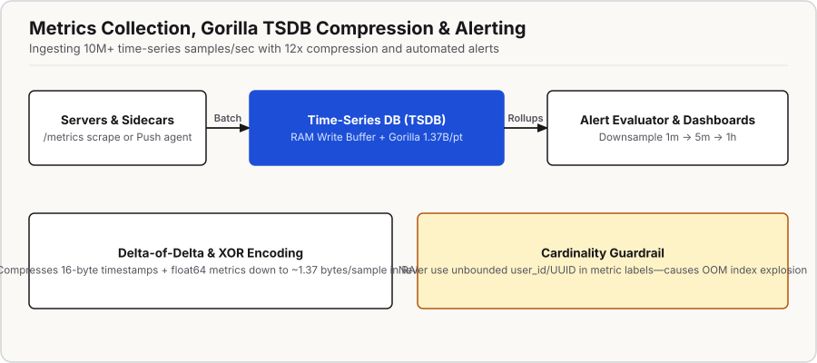

Module 44: System Design — Metrics Monitoring & Alerting System
Comprehensive architectural breakdown of a large-scale Metrics Monitoring & Alerting System (Prometheus, Datadog, Google Monarch, Netflix Atlas), covering Time-Series Databases (TSDB), Gorilla compression, Pull vs. Push collection models, and sliding-window alert evaluation.
Prerequisites
Before tackling metrics monitoring systems, review these core modules:
- 09 - Storage Engines & Indexing (LSM-trees vs Append-only time-series engines)
- 17 - Message Queues & Streaming (High-throughput metric ingestion pipelines)
- 20 - Fault Tolerance & Resilience (Alert deduplication, flapping prevention, on-call paging)
- 35 - Global Notification System (PagerDuty, Slack, SMS dispatch)
ELI5 (30-Second Summary)
Imagine an intensive care unit (ICU) hospital with 100,000 patient beds. Every second, sensors record each patient's heart rate, oxygen level, and blood pressure. That's millions of numbers arriving every minute!
If a doctor's pager buzzed every single time a heart rate dipped for half a second, the doctor would go insane from false alarms (Alert Fatigue / Flapping). And if the hospital saved every single millisecond heart beat forever on hard drives, their storage would fill up in days.
A Metrics Monitoring System takes millions of numbers per second, compresses them by 90% using mathematical tricks (Gorilla XOR Compression), shrinks old data into 1-hour averages (Downsampling / Rollups), and triggers alarms only when a patient's numbers stay dangerous for at least 3 minutes straight (Alert Evaluation Window)!
Physical Analogy
Think of an Air Traffic Control Tower Flight Telemetry Dashboard:
| Air Traffic Analogy | Metrics Monitoring Concept | Technical Description |
|---|---|---|
| Cockpit Transponder Broadcasting Altitude | Metric Datapoint (name, tags, val, ts) |
4-tuple: Metric string, dimensional labels, float value, Unix timestamp. |
| Radar Sweeping Planes Every 5 Seconds | Pull-Based Scraping (Prometheus) | Central collector polling /metrics HTTP endpoints on worker pods. |
| Radar Screen History Log Tape | Time-Series Database (TSDB) | Specialized storage engine optimized for timestamp-ordered numeric sequences. |
| Compressing Identical Altitude Readings | Gorilla Compression (Delta-of-Delta) | Bitwise compression reducing 16 bytes per datapoint to ≈ 1.37 bytes. |
| Alarm Buzzer when Plane Altitude < 1,000ft for 30s | Alert Rule Evaluation (PENDING → FIRING) |
Evaluates rules over sliding time windows before triggering PagerDuty. |
The Problem It Solves
Operating thousands of microservice instances across multi-region cloud clusters presents massive observability challenges:
- Unprecedented Data Volume: 50,000 microservice pods emitting 100 metrics every 10 seconds generates 500,000 datapoints/second (43.2 billion datapoints/day).
- Heavy Read vs Write Asymmetry: Ingestion is 99% writes, while human engineers and dashboards execute complex aggregations (p99 latency over 7 days).
- Storage Cost: Storing billions of uncompressed 64-bit float numbers in standard SQL databases consumes hundreds of terabytes and results in query timeouts.
Visual Architecture

flowchart TD
subgraph Instrumentation["1. Metrics Collection Layer"]
AppPod1["Microservice Pod A (/metrics)"]
AppPod2["Microservice Pod B (/metrics)"]
Daemon["Host Node Exporter (CPU/RAM)"]
end
subgraph Ingestion["2. Collection Engine (Pull vs Push)"]
PromPull["Metrics Collector / Scraper (Prometheus / Otel)"]
PromPull -->|"HTTP GET /metrics (every 10s)"| AppPod1
PromPull -->|"HTTP GET /metrics (every 10s)"| AppPod2
PromPull -->|"HTTP GET /metrics (every 10s)"| Daemon
end
subgraph TSDB["3. Time-Series Storage & Downsampling"]
PromPull --> InMemBuffer["In-Memory Head Block (WAL + Gorilla XOR)"]
InMemBuffer -->|"Flush 2h Blocks"| BlockStorage[("Persistent TSDB (Local NVMe / S3)")]
BlockStorage --> Downsampler["Compactor & Downsampler (10s -> 5m -> 1h)"]
Downsampler --> ColdArchive[("Cold Long-Term Storage (S3 / GCS)")]
end
subgraph Alerting["4. Query & Alert Evaluation Engine"]
AlertRule["Alert Evaluator (Runs every 15s)"]
AlertRule -->|"PromQL Query: p99 > 500ms for 3m"| InMemBuffer
AlertRule --> StateCheck{"State Machine"}
StateCheck -->|"Breached < 3m"| Pending["State: PENDING (Do Not Page)"]
StateCheck -->|"Breached > 3m"| Firing["State: FIRING (Page Engineer)"]
Firing --> AlertMgr["AlertManager (Deduplicate & Group)"]
AlertMgr --> PagerDuty["PagerDuty / Slack / Email"]
endReal Numbers & Concurrency Sizing
Consider a system monitoring 50,000 Microservice Pods:
- Data Ingestion Volume:
- Each pod emits 100 unique metrics (CPU, RAM, request latency, error count, connection pools).
- Metrics collected every 10 seconds:
- Metric streams: 50,000 × 100 = 5 million time series.
- Ingestion rate: 5M / 10 s = 500,000 metric datapoints/second.
- Daily datapoints: 500,000 × 86,400 ≈ 43.2 billion datapoints/day.
- Gorilla Compression Sizing:
- Raw uncompressed datapoint: 8-byte Unix timestamp + 8-byte IEEE 754 float = 16 bytes.
- Raw daily volume: 43.2B × 16 bytes ≈ 691.2 Gigabytes/day.
- With Gorilla XOR Compression (≈ 1.37 bytes/datapoint ≈ 12× compression):
- Compressed daily volume: 43.2B × 1.37 bytes ≈ 59.2 Gigabytes/day!
- 59.2 GB fits easily on modern high-speed NVMe SSD drives.
Deep Dive: Under the Hood
1. The Pull vs. Push Metrics Model
| Dimension | Pull Model (Prometheus) | Push Model (Datadog / Graphite) |
|---|---|---|
| How it works | Central scraper queries HTTP /metrics on targets |
Agents/apps push metrics to collector via UDP/HTTP |
| Health Detection | Automatic (if scrape fails, target is DOWN) | Difficult (silence could mean idle or dead) |
| Network & Security | Requires collector access to pod network | Firewall friendly (outbound traffic from pods) |
| Ephemeral Jobs | Needs Pushgateway for short-lived batch jobs | Ideal for short-lived AWS Lambda / serverless |
2. Gorilla TSDB Compression (Facebook Engine)
Modern TSDBs (Prometheus, InfluxDB, M3DB) use Facebook's Gorilla compression algorithms:
- Timestamp Compression (Delta-of-Delta):
- Metrics arrive at predictable intervals (every 10s: T0, T0+10, T0+20).
- The first delta is D = Tn - Tn-1 = 10.
- The delta-of-delta is Δ = Dn - Dn-1 = 10 - 10 = 0.
- If Δ = 0, store a single bit
0! 95%+ of timestamps compress down to a single bit.
- Value Compression (XOR Floating Point):
- Metric values rarely fluctuate wildly (e.g., CPU 42.1%, then 42.15%).
- XOR the current float with the previous float: Vn \oplus Vn-1.
- Most leading and trailing bits are identical zeroes, allowing variable-length bit packing.
3. Downsampling & Retention Policies
To keep query times fast across months of data:
- Raw Tier (10-second resolution): Retained for 14 days for live incident debugging.
- 5-Minute Rollups (avg, min, max, count): Retained for 90 days.
- 1-Hour Rollups: Retained for 15 months for year-over-year capacity planning.
Trade-offs & Decision Matrix
| Dimension | Relational DB (PostgreSQL / Timescale) | Centralized SaaS (Datadog) | Open-Source TSDB (Prometheus + Thanos) |
|---|---|---|---|
| Ingestion Scale | Moderate (tens of thousands / sec) | Unlimited (cloud managed) | High (millions / sec with sharding) |
| Operational Overhead | High (table vacuuming, partition maintenance) | Zero (SaaS) | Moderate (managing Kubernetes clusters) |
| Cost at Scale | Predictable infrastructure cost | Catastrophically expensive at scale | Low infrastructure cost |
| Query Language | SQL | Datadog UI | PromQL (powerful vector math) |
Common Pitfalls & Anti-Patterns
- High Cardinality Explosions: Adding raw User IDs or IP addresses as metric labels (e.g.,
http_requests_total{user_id="12345"}). Generating 10 million distinct label combinations creates 10 million distinct time-series streams in memory, causing out-of-memory crashes! Rule: Labels must have bounded low cardinality (e.g.,status_code,method,endpoint). - Missing Evaluation Window ("Alert Flapping"): Triggering alerts on single instantaneous spikes causes engineers' phones to ring every time a GC pause occurs. Always require a sustained duration (
FOR 5m). - Missing Downsampling: Querying 1 year of raw 10-second datapoints requires loading 3.1 million floats into memory per dashboard panel, freezing browser tabs.
Try It Yourself
A runnable, zero-dependency Python simulation demonstrating time-series metric ingestion, Gorilla-style delta compression, downsampling rollups, and rule-based alert state transitions (OK → PENDING → FIRING) is included in this directory.
Run the simulation:
python demo.py
Production References & Further Reading
- Alex Xu: System Design Interview Vol 2 - Chapter 5 (Metrics Monitoring and Alerting System)
- Pelkonen et al.: Gorilla - A Fast, Scalable, In-Memory Time Series Database (VLDB 2015)
- Prometheus Architecture & Storage Engine Internals
Top 5 Interview Questions with Model Answers
Q1: How does Gorilla compression achieve a 10x reduction in time-series storage size?
Model Answer: Gorilla compresses timestamps and floating-point values independently:
- Delta-of-Delta for Timestamps: Because metrics are scraped at regular intervals (e.g., every 10s), the difference between consecutive time deltas (Δ = (Tn - Tn-1) - (Tn-1 - Tn-2)) is zero most of the time. When Δ = 0, Gorilla stores a single bit
0. - XOR Floating-Point Compression: Successive float values (e.g., CPU percentage) have similar binary representations. By computing Vn \oplus Vn-1, identical leading and trailing bits become zeros. Gorilla only encodes the number of leading and trailing zeros followed by the meaningful bits. Together, these techniques compress 16-byte datapoints down to an average of 1.37 bytes.
Q2: What is the "High Cardinality Problem" in metrics monitoring, and how do you prevent it?
Model Answer: In time-series databases, a unique time-series stream is created for every unique combination of metric name and key-value label pairs.
- If a developer adds a high-cardinality tag like
user_id(10M values) ororder_id(100M values) to a metric, the system must allocate 10 million independent time-series streams in memory. - This results in memory exhaustion, massive index bloat, and TSDB crashes.
- Prevention: Enforce strict admission control and linting rejecting UUIDs or dynamic strings in label keys. High-cardinality attributes belong in distributed tracing (OpenTelemetry) or structured logs, never metric labels.
Q3: What is the difference between Pull and Push metrics architectures, and when should you use each?
Model Answer:
- Pull Architecture (Prometheus): The central monitoring server polls
/metricsHTTP endpoints on target nodes. It provides automatic health detection (if the scrape fails, the target is known to be dead), eliminates backpressure from targets, and centralizes scrape frequencies. - Push Architecture (Datadog/CloudWatch): Target services push metrics to a monitoring gateway. It is firewall-friendly (requires only outbound connections), ideal for ephemeral serverless workloads (AWS Lambda) that terminate before a scraper can poll them, and handles high-frequency event pushes.
Q4: How do you prevent "Alert Fatigue" and flapping alerts?
Model Answer:
- Sustained Duration Condition (
FORclause): Require the metric to breach the threshold continuously for M minutes (e.g.,CPU > 90% FOR 5m) before advancing fromPENDINGtoFIRING. - AlertManager Deduplication & Grouping: Group related alerts into a single notification (e.g., if a datacenter switch fails, group 50 individual server unreachable alerts into "Datacenter Switch Offline: 50 pods affected").
- Inhibit Rules: Suppress downstream alerts when a root dependency has already triggered (e.g., if the entire database cluster is down, mute downstream API latency alerts).
Q5: How do you scale Prometheus across thousands of Kubernetes clusters?
Model Answer: Single-node Prometheus instances cannot handle global enterprise scale. We implement a distributed architecture using Thanos or Cortex/M3DB:
- Local Prometheus per Cluster: Each Kubernetes cluster runs a local Prometheus instance with a short retention window (e.g., 24 hours).
- Thanos Sidecar: Runs alongside Prometheus, streaming immutable 2-hour TSDB blocks directly to durable object storage (Google Cloud Storage / Amazon S3).
- Thanos Query & Store Gateway: A centralized querier evaluates global PromQL queries by fanning out across regional sidecars and object storage, providing unified multi-cluster dashboards with unlimited historical retention.
Check Yourself Quiz
1. Why does Gorilla compression use XOR for floating-point values?
A) Because XOR encrypts passwords.B) Because consecutive metric readings share identical leading and trailing bits, allowing variable-length encoding of the remaining bits.
C) Because XOR turns floats into integers.
D) Because XOR is faster than addition.
Answer: B. XORing similar floats yields many leading and trailing zero bits, achieving massive compression.
2. What happens if a developer adds `user_id` as a metric label?
A) The dashboard loads 10x faster.B) High Cardinality Explosion: creates millions of unique time-series streams, causing TSDB out-of-memory crashes.
C) The database automatically converts to SQL.
D) The network cable overheats.
Answer: B. Millions of label permutations multiply time-series streams, exhausting RAM.
3. What is the alert state transition sequence in Prometheus?
A) FIRING -> PENDING -> OKB) OK -> PENDING (during evaluation window) -> FIRING (if condition persists)
C) ERROR -> WARNING -> CRITICAL
D) SLEEP -> WAKE -> RUN
Answer: B. The intermediate PENDING state ensures transient blips do not page engineers.
4. Why are short-lived serverless functions (like AWS Lambda) difficult to monitor via Pull scraping?
A) Because Lambda does not use Python.B) Because Lambda instances spin up, execute in milliseconds, and terminate before a periodic scraper can initiate an HTTP connection.
C) Because Lambda has no memory.
D) Because Lambda is encrypted.
Answer: B. Ephemeral functions require push-based metrics emission before shutdown.
5. What process reduces raw 10-second metrics into 1-hour historical rollups?
A) EncryptionB) Downsampling and Compaction
C) Sharding
D) Consistent Hashing
Answer: B. Downsampling averages historical intervals to keep long-term queries fast and storage affordable.